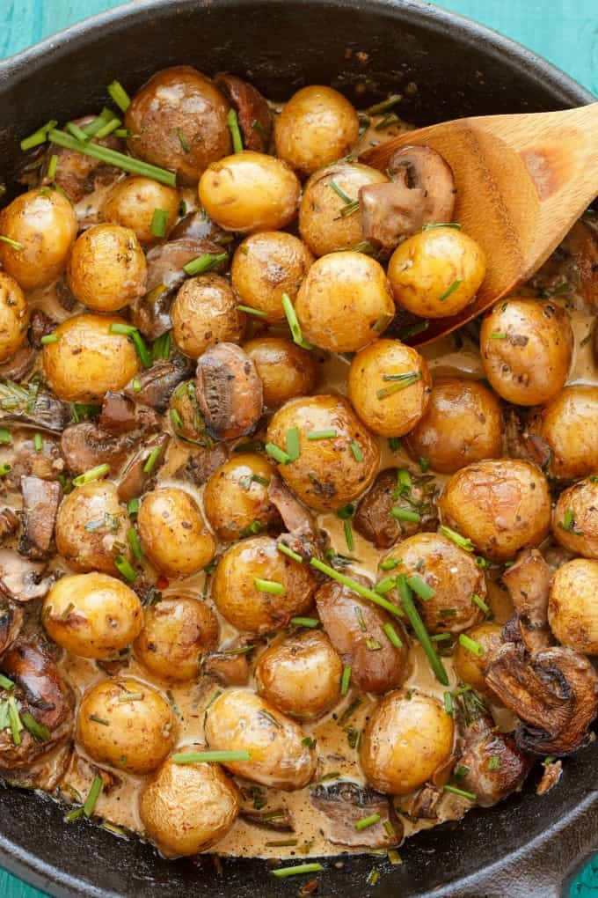

mushroom and potato curry

ingredients
- 1 tablespoon oil
- 1 onion, roughly chopped
- 1 large potato, chopped into small chunks
- 1 aubergine, trimmed and chopped into chunks
- 250 grams button mushrooms
- 2-4 tablespoons curry paste (depending on how hot you like it)
- 150ml vegetable stock
- 400ml can reduced-fat cocnut milk chopped coriander, to serve
steps
- Heat the oil in a large saucepan, add the onion and potato. Cover, then cook over a low heat for 5 mins until the potatoes start to soften. Throw in the aubergine and mushrooms, then cook for a few more mins.
- Stir in the curry paste, pour over the stock and coconut milk. Bring to the boil, then simmer for 10 mins or until the potato is tender. Stir through the coriander and serve with rice or naan bread.
other recipes